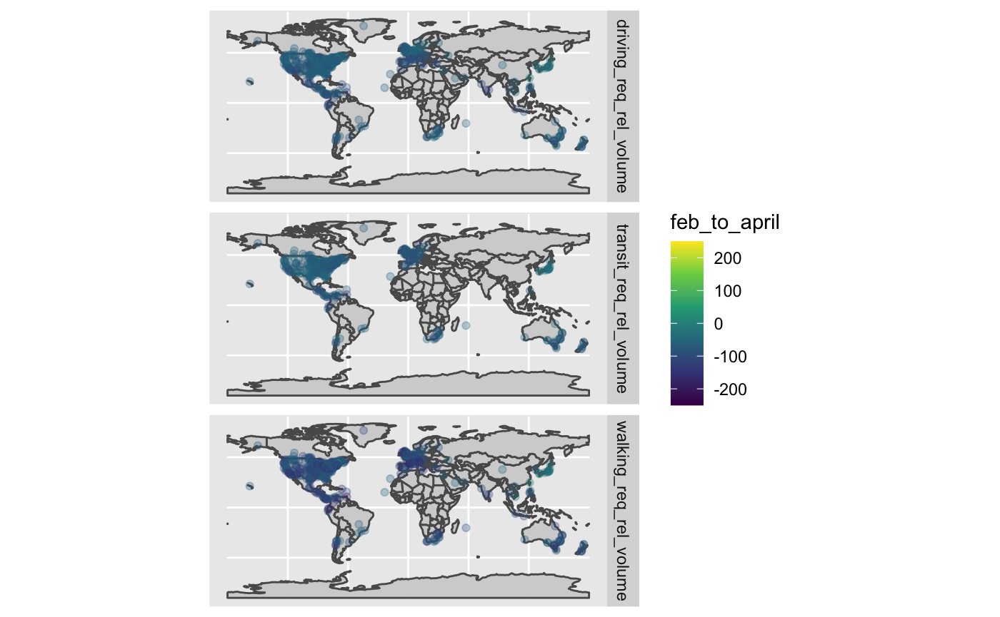

vignettes/apple_cities_across_space_and_change.Rmd
apple_cities_across_space_and_change.RmdOne of the nice things about the Apple data is that it goes to the city scale. This matches up nicely with the United Nations Code for Trade and Transport Locations schema - a detailed schema that gives a great deal of information about these cities, including, for many, geospatial information. We can look at these cities, then, using some standard spatial methods.
Let’s load the data.
library(covid19mobility) library(sf) library(rnaturalearth) library(dplyr) library(ggplot2) apple_cities <- refresh_covid19mobility_apple_city()
To turn it into something spatial, we’ll need to join it with the UN LOCODE classification, filter out missing spatial info, and then transform it, using as our Coordinate Reference System EPSG 4326.
# Get UN LOCODEs # from jebyrnes/unlocode locode_url <- "https://github.com/jebyrnes/unlocodeR/raw/master/data/unlocode.rda" f <- tempfile() utils::download.file(locode_url, f, quiet = TRUE) load(f) # loads unlocode unlink(f) #filter to only what we need unlocode <- unlocode %>% select(un_locode, latitude_dec, longitude_dec ) # JOIN! apple_cities_spatial <- apple_cities %>% left_join(unlocode, by = c("location_code" = "un_locode")) %>% #remove no spatial info filter(!is.na(latitude_dec)) %>% #turn into an sf object using x, y st_as_sf(coords = c("longitude_dec", "latitude_dec"), crs = 4326)
So, where are these cities around the globe? Let’s look!
country_map <- rnaturalearth::ne_countries(returnclass = "sf") unique_cities <- apple_cities_spatial %>% group_by(location_code) %>% slice(1L) %>% ungroup() ggplot() + geom_sf(data = country_map, fill = "lightgrey") + geom_sf(data = unique_cities)
So, given this map, let’s look at change between February 1st and April 1st, and then between April 1st and June 1st.
apple_cities_spatial_changes <- apple_cities_spatial %>% group_by(location_code, data_type) %>% filter(as.character(date) %in% c("2020-02-01", "2020-04-01", "2020-06-01")) %>% arrange(date) %>% summarize(feb_to_april = value[2] - value[1], april_to_june = value[3] - value[2]) %>% ungroup()
Let’s look at the Februrary to April change first
ggplot() + geom_sf(data = country_map, fill = "lightgrey") + geom_sf(data = apple_cities_spatial_changes, aes(color = feb_to_april), alpha = 0.3) + scale_color_viridis_c(limits = c(-250,250)) + facet_grid(data_type~.)

What about April to June?
ggplot() + geom_sf(data = country_map, fill = "lightgrey") + geom_sf(data = apple_cities_spatial_changes, aes(color = april_to_june), alpha = 0.3) + scale_color_viridis_c(limits = c(-250,250)) + facet_grid(data_type~.)